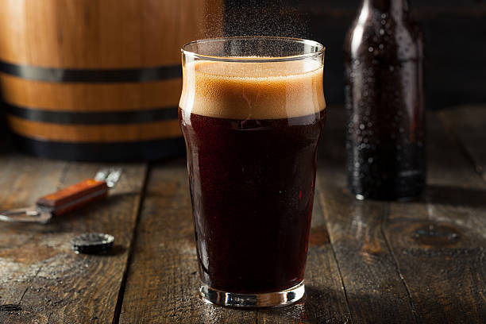

Root beer

Description
Root beer is a distinctly American drink with a sweet, herbal flavor that's been made since the colonial era.
Ingredients
- 10 cups water
- 3 tablespoons sarsaparilla root
- 1 tablespoon ginger root
- 1 tablespoon licorice root
- 2 teaspoons dandelion root
- ¼ cup sassafras root bark
- ¾ cup unrefined cane sugar
Steps
- Fill a large stock pot with 10 cups water, and then spoon in the sarsaparilla, ginger, licorice, dandelion, birch, and star anise.
- Bring to a boil over medium-high heat, then turn down the heat to medium-low.
- Turn off the heat, stir in the sugar until it dissolves.
- Strain decoction, discarding the herbs.
- Ferment the root beer at room temperature about 2 days, allowing more time during cold weather.